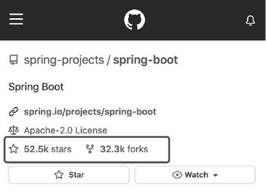
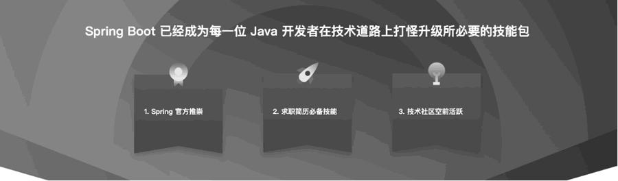
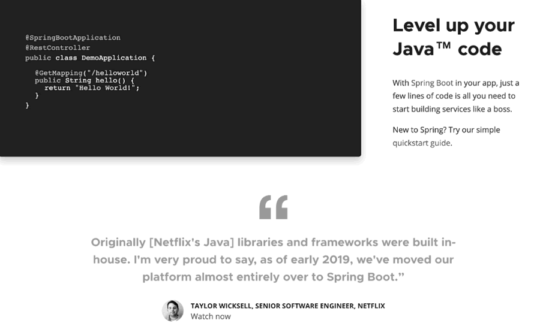
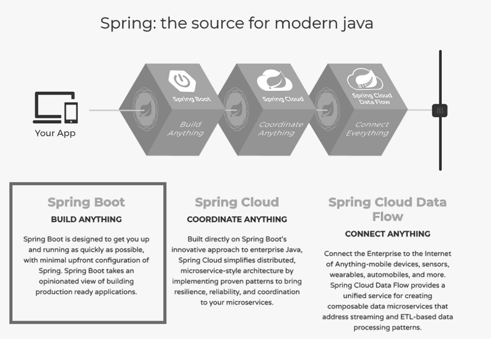
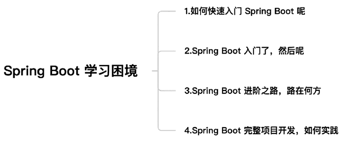

首页 > 编程笔记
Spring Boot框架介绍（非常详细）
为什么 Java 开发人员需要掌握 Spring Boot？因为 Spring Boot 已经成为其在职业道路上“打怪升级”的必备技能包了。Spring Boot 是目前 Java 社区最有影响力的项目之一，也是下一代企业级应用开发的首选技术。
Spring Boot 是伴随 Spring 4 而产生的技术框架，具备良好的技术基因。在继承 Spring 框架所有优点的同时，它也为开发人员带来了巨大的便利。与普通的 Spring 项目相比，Spring Boot 可以简化项目的配置和编码，使项目部署更方便，而且它还为开发人员提供了“开箱即用”的良好体验，可以进一步提升开发效率。
Spring Boot 正在成为越来越流行的开发框架。从 Spring Boot 词条的百度指数可以确切地看出，开发人员对 Spring Boot 技术栈的关注度越来越高，如图 1 所示。
Spring Boot 以其优雅简单的启动配置和便利的开发模式深受好评，其开源社区也空前的活跃。截至 2020 年年底，Spring Boot 项目在 GitHub 网站上已经有 52.5k 的 stars，32.3k 的 forks（如图 1 所示），并且数量仍在高速增长。
另外，各种基于 Spring Boot 的项目也如雨后春笋一般出现在开发人员的面前，其受欢迎程度可见一斑。现在，很多技术团队在使用 Spring Boot 进行企业项目的开发。
现在，企业对 Java 开发工程师的要求更高，需要有一些实际开发的项目经验，并且多半是 SSM（Spring+Spring MVC+MyBatis）或者 Spring Boot 相关的项目经验。如果求职者简历中没有足够的项目经验，那么简历投递可能就会杳无音信。
Spring Boot 已经成为企业招聘需求的重要部分了。这也使得 Spring Boot 成为 Java 开发人员必备的技术栈。无论应届毕业生还是有经验的 Java 开发人员，Spring Boot 技术栈及相关项目经验都已经成为他们简历中的必要元素。
除此之外，Java 技术社区和 Spring 官方团队也对 Spring Boot 有非常多的资源倾斜。Spring 官方极力推崇 Spring Boot，后续笔者会向读者介绍 Spring 官方对 Spring Boot 的重视。
Spring Boot 有着非常好的前景，具体如图 2 所示。
在该页面中，官方毫不吝啬对于 Spring Boot 的赞美之词，也极力推荐开发人员使用 Spring Boot 升级 Java 项目的代码。同时，也引用了 Netflix 高级开发工程师的话：“I'm very proud to say, as of early 2019, we've moved our platform almost entirely over to Spring Boot.”其中的含义不言自明。
官方也在不断鼓励开发人员使用 Spring Boot，并使用 Spring Boot “升级”项目代码进而达到优化 Java 项目的目的。图 3 已经是改版后的 Spring 官网，比之前的话术略微有一些收敛。在 2018 年 Spring 的官网中，官方对于 Spring Boot 的描述是“Spring Boot BUILD ANYTHING!”
翻译过来就是“用 Spring Boot 构造一切！”
彼时的官网如图 4 所示。Spring Boot 位于 Spring 三个重量级产品的第一位，可以看出 Spring 官方也非常重视 Spring Boot 的发展。
使用 Spring Boot 的目的在于用最少的 Spring 预先配置，让开发人员尽快构建和运行应用，最终创建产品级的 Spring 应用和服务。
这可不是一句玩笑话，相信熟悉 Spring 开发项目的读者都深有体会。无论 Spring 框架的初学者还是具有经验的开发人员，对 Spring 项目的配置文件多少都会感到头痛，尤其在项目日渐庞大之后，纷繁复杂的 XML 配置文件让开发人员十分头痛。
在一个项目开发完成后，这种痛苦也许会消除，但是一旦接手新项目，又要复制、粘贴一些十分雷同的 XML 配置文件，周而复始地进行这种枯燥死板的操作让人不胜其烦。
Spring Boot 解决了这个问题。Spring Boot 通过大量的自动化配置等方式简化了原 Spring 项目开发过程中编码人员的配置步骤。其中，大部分模块的设置和类的装载都由 Spring Boot 预先做好，从而使得开发人员不用再重复地进行 XML 配置，极大地提升了开发人员的工作效率。开发人员可以更加注重业务的实现而不是繁杂的配置工作，从而可以快速地构建应用。
框架的封装和抽象程度的完善，也使得代码的复用性更高、项目的可维护性提高、开发和学习成本降低，能加快开发进度并最终形成行业开发标准。从这个角度来说，越简洁的开发模式就越能减轻开发人员的负担并提升开发效率，行业内普遍认可并接受的框架也会越来越流行，并最终会形成一套读者都认可的开发标准。Spring Boot 就正在逐渐改变原有的开发模式，形成行业认可的开发标准。
官方还对 Spring Boot 做了大量的封装和优化，从而使开发人员更容易上手和学习。相对于 Spring 来说，使用 Spring Boot 完成同样的功能和效果，开发人员需要操作和编码的工作更少了。
Spring Initializr 方案是官方提供的创建新 Spring Boot 项目的不错选择。开发人员使用官方的初始化方案创建 Spring Boot 项目能够确保获得经过测试和验证的依赖项，这些依赖项适用于自动配置，能够极大简化项目创建流程。同时，IDEA 和 STS 编辑器也支持这种直接初始化 Spring Boot 项目的方式，使开发人员在一分钟之内就可以完成一个项目的初始化工作。
starter 可以简单理解为“场景启动器”，开发人员可以在不同的场景和功能中引入不同的 starter，例如：
针对其他企业级开发中遇到的各种场景，Spring Boot 都有相关的 starter。如果没有对应的 starter 开发人员也可以自行定义。
使用 Spring Boot 开发项目可以非常方便地进行包的管理，所需依赖以及依赖 jar 包的关系和版本都由 starter 自行维护，在很大程度上减少了维护依赖版本所造成的 jar 包冲突或者依赖的版本冲突。
使用嵌入式的 Servlet 容器使得开发调试环节和部署环节的工作量有所减少，同时开发人员也可以通过 Spring Boot 配置文件修改内置 Servlet 容器的配置，简单又灵活。
在 Web 应用中，Spring Boot 提供了 spring-boot-starter-web 来为 Web 开发予以支持。spring-boot-starter-web 为开发人员提供了嵌入的 Tomcat 和 Spring MVC 的依赖，可以快速构建 MVC 模式的 Web 工程。
在SOA和微服务中，用 Spring Boot 可以包装每个服务。Spring Cloud 即是一套基于 Spring Boot 实现分布式系统的工具，适用于构建微服务。Spring Boot 提供了 spring-boot-starter-websocket 来快速实现消息推送，同时也可以整合流行的 RPC 框架，提供 RPC 服务接口（只要简单加入对应的 starter 组件即可）。
从以上各个特性可以看出，Spring Boot 可以简化 Spring 项目开发过程中冗余复杂的流程。另外，引入 spring-boot-start-actuator 依赖并进行相应的设置可获取 Spring Boot 进程的运行期性能参数，让运维人员也能体验到 Spring Boot 的魅力。
笔者将结合自身的学习和实践经验，对这些问题进行总结和回答。
学习新技术的第一阶段，首先应该了解这门技术的产生背景、理念、发展历程，同时要分析它主要解决什么痛点。然后可以参照官网的案例进行尝试性的编码。
了解一门技术，甚至通过编码实现了一些小功能，但是没有尝试与正在开发或者已经上线的项目进行结合与类比，这是不行的。如果开发人员处在这个状态下，就应该思考一下用 Spring Boot 重构正在开发或者已经上线的项目。
笔者认为，原项目中的模块和功能，都可以尝试使用 Spring Boot 实现，并逐一比较该开发模式与平时直接使用 Spring 进行开发有何不同。通过一两个项目的实践，就能更加了解 Spring Boot 技术栈，而且可以整合前期零散的知识点，获得较大提升。
1) 能够使用 Spring Boot 进行功能开发，但是并不知道所写的代码具体是如何生效的。比如最常见的数据源配置，即在配置文件中设置 JDBC 的相关参数就可以直接连接数据库并进行相关操作。此时的痛点就是虽然能够写出一个功能的实现代码，但不知道为什么要这么写。
2) 在面试或者技术交流时，谈到 Spring Boot 的底层实现和设计思想，该阶段的开发人员往往一脸茫然，无法给出自己的回答。他们对 Spring Boot 的了解并不全面，而且 Spring Boot 技术栈涉及的模块很多，知识点的串联难度也就比较高。
比如“约定优于配置”。什么是约定优于配置？它具有什么特点，又能给实际开发工作的效率带来哪些提升？比如自动配置，什么是自动配置？它又是如何实现的？自动配置的机制能够给开发工作带来哪些改变？再比如 Spring Boot 中的各种 starter 是什么？该如何深入了解它？此时的痛点就是对于耳熟能详的特性或者概念不理解其内在含义。
3) 对于阅读和学习源码，该阶段的开发人员往往不知道从哪里看起，也没有坚实的理论基础，看不懂源码的含义，最后就放弃学习。此时的痛点就是对于源码阅读有心无力，没有良好的方法论和指导。
如果正在阅读本文的读者也遇到了相似问题，一方面说明你已经掌握了 Spring Boot 的基本使用方法，另一方面也说明你需要升级相关知识的认知了。
其实笔者在项目开发的过程中也会遇到各种各样的问题，甚至也遇到过不能继续开发的死局。任何人都会遇到问题，我们应该尝试着解决它，而不是退缩和逃避，通过摸索、学习最终都会解决问题。
Spring Boot 是伴随 Spring 4 而产生的技术框架，具备良好的技术基因。在继承 Spring 框架所有优点的同时，它也为开发人员带来了巨大的便利。与普通的 Spring 项目相比，Spring Boot 可以简化项目的配置和编码，使项目部署更方便，而且它还为开发人员提供了“开箱即用”的良好体验，可以进一步提升开发效率。
Spring Boot 正在成为越来越流行的开发框架。从 Spring Boot 词条的百度指数可以确切地看出，开发人员对 Spring Boot 技术栈的关注度越来越高，如图 1 所示。

图 1 Spring Boot 项目的GitHub数据
图 1 Spring Boot 项目的GitHub数据
Spring Boot 以其优雅简单的启动配置和便利的开发模式深受好评，其开源社区也空前的活跃。截至 2020 年年底，Spring Boot 项目在 GitHub 网站上已经有 52.5k 的 stars，32.3k 的 forks（如图 1 所示），并且数量仍在高速增长。
另外，各种基于 Spring Boot 的项目也如雨后春笋一般出现在开发人员的面前，其受欢迎程度可见一斑。现在，很多技术团队在使用 Spring Boot 进行企业项目的开发。
Java 开发人员必备的技术栈
在五六年前，Java 开发工程师只要掌握 JSP 和 Servlet，并且有一些简单的项目经验，就可以获得很多面试机会。如果面试过程表现良好，拿到一份 offer 并不困难。然而，在现如今的大环境下，这几乎是不可能的。现在，企业对 Java 开发工程师的要求更高，需要有一些实际开发的项目经验，并且多半是 SSM（Spring+Spring MVC+MyBatis）或者 Spring Boot 相关的项目经验。如果求职者简历中没有足够的项目经验，那么简历投递可能就会杳无音信。
Spring Boot 已经成为企业招聘需求的重要部分了。这也使得 Spring Boot 成为 Java 开发人员必备的技术栈。无论应届毕业生还是有经验的 Java 开发人员，Spring Boot 技术栈及相关项目经验都已经成为他们简历中的必要元素。
除此之外，Java 技术社区和 Spring 官方团队也对 Spring Boot 有非常多的资源倾斜。Spring 官方极力推崇 Spring Boot，后续笔者会向读者介绍 Spring 官方对 Spring Boot 的重视。
Spring Boot 有着非常好的前景，具体如图 2 所示。

图 2 Spring Boot的前景
图 2 Spring Boot的前景
Spring Boot的理念
关于 Spring Boot 框架的理念，可以通过 Spring 官网探知一二，如图 3 所示。

图 3 Spring Boot的理念
图 3 Spring Boot的理念
在该页面中，官方毫不吝啬对于 Spring Boot 的赞美之词，也极力推荐开发人员使用 Spring Boot 升级 Java 项目的代码。同时，也引用了 Netflix 高级开发工程师的话：“I'm very proud to say, as of early 2019, we've moved our platform almost entirely over to Spring Boot.”其中的含义不言自明。
官方也在不断鼓励开发人员使用 Spring Boot，并使用 Spring Boot “升级”项目代码进而达到优化 Java 项目的目的。图 3 已经是改版后的 Spring 官网，比之前的话术略微有一些收敛。在 2018 年 Spring 的官网中，官方对于 Spring Boot 的描述是“Spring Boot BUILD ANYTHING!”
翻译过来就是“用 Spring Boot 构造一切！”
彼时的官网如图 4 所示。Spring Boot 位于 Spring 三个重量级产品的第一位，可以看出 Spring 官方也非常重视 Spring Boot 的发展。

图 4 2018年Spring官网对于Spring Boot框架的描述文案
图 4 2018年Spring官网对于Spring Boot框架的描述文案
使用 Spring Boot 的目的在于用最少的 Spring 预先配置，让开发人员尽快构建和运行应用，最终创建产品级的 Spring 应用和服务。
Spring Boot可以简化开发
“当你终于把 Spring 的 XML 配置文件调试完成的时候，我已经用 Spring Boot 开发好 N 个功能了。”这可不是一句玩笑话，相信熟悉 Spring 开发项目的读者都深有体会。无论 Spring 框架的初学者还是具有经验的开发人员，对 Spring 项目的配置文件多少都会感到头痛，尤其在项目日渐庞大之后，纷繁复杂的 XML 配置文件让开发人员十分头痛。
在一个项目开发完成后，这种痛苦也许会消除，但是一旦接手新项目，又要复制、粘贴一些十分雷同的 XML 配置文件，周而复始地进行这种枯燥死板的操作让人不胜其烦。
Spring Boot 解决了这个问题。Spring Boot 通过大量的自动化配置等方式简化了原 Spring 项目开发过程中编码人员的配置步骤。其中，大部分模块的设置和类的装载都由 Spring Boot 预先做好，从而使得开发人员不用再重复地进行 XML 配置，极大地提升了开发人员的工作效率。开发人员可以更加注重业务的实现而不是繁杂的配置工作，从而可以快速地构建应用。
框架的封装和抽象程度的完善，也使得代码的复用性更高、项目的可维护性提高、开发和学习成本降低，能加快开发进度并最终形成行业开发标准。从这个角度来说，越简洁的开发模式就越能减轻开发人员的负担并提升开发效率，行业内普遍认可并接受的框架也会越来越流行，并最终会形成一套读者都认可的开发标准。Spring Boot 就正在逐渐改变原有的开发模式，形成行业认可的开发标准。
Spring Boot的特性
1) 继承Spring的优点
Spring Boot 来自 Spring 家族，因此 Spring 所有具备的功能和优点，Spring Boot 同样拥有。官方还对 Spring Boot 做了大量的封装和优化，从而使开发人员更容易上手和学习。相对于 Spring 来说，使用 Spring Boot 完成同样的功能和效果，开发人员需要操作和编码的工作更少了。
2) 可以快速创建独立运行的Spring项目
Spring Boot 简化了基于 Spring 的应用开发，通过少量的代码就能快速构建一个个独立的、产品级别的 Spring 应用。Spring Initializr 方案是官方提供的创建新 Spring Boot 项目的不错选择。开发人员使用官方的初始化方案创建 Spring Boot 项目能够确保获得经过测试和验证的依赖项，这些依赖项适用于自动配置，能够极大简化项目创建流程。同时，IDEA 和 STS 编辑器也支持这种直接初始化 Spring Boot 项目的方式，使开发人员在一分钟之内就可以完成一个项目的初始化工作。
3) 习惯优于配置
Spring Boot 遵循习惯优于配置的原则，在使用 Spring Boot 后开发人员只需要很少的配置甚至零配置即可完成项目开发，一般使用 Spring Boot 默认配置即可。4) 拥有大量的自动配置
自动进行 Spring 框架的配置，可以节省开发人员大量的时间和精力，能够让开发人员专注在业务逻辑代码的编写上。5) starter自动依赖与版本控制
Spring Boot 通过一些 starter 的定义可以减少开发人员在依赖管理上所花费的时间。开发人员在整合各项功能的时候，不需要自己搜索和查找所需依赖，但可以在 Maven 的 pom 文件中进行定义。starter 可以简单理解为“场景启动器”，开发人员可以在不同的场景和功能中引入不同的 starter，例如：
- 如果需要开发 Web 项目，就在 pom 文件中导入 spring-boot-starter-web。
- 在 Web 项目开发中所需的依赖都已经维护在 spring-boot-starter-web 中，无须再导入 Servlet、Spring MVC 等所需要的 jar 包。
- 项目中如果需要使用 JDBC，在 pom 文件中导入 spring-boot-starter-jdbc 即可。
针对其他企业级开发中遇到的各种场景，Spring Boot 都有相关的 starter。如果没有对应的 starter 开发人员也可以自行定义。
使用 Spring Boot 开发项目可以非常方便地进行包的管理，所需依赖以及依赖 jar 包的关系和版本都由 starter 自行维护，在很大程度上减少了维护依赖版本所造成的 jar 包冲突或者依赖的版本冲突。
6) 使用嵌入式的Servlet容器
Spring Boot 直接嵌入 Tomcat、Jetty 或者 Undertow 作为 Servlet 容器，降低了对环境的要求，在开发和部署时都无须安装相关 Web 容器，调试方便。在开发完成后可以将项目打包为 jar 包，并使用命令行直接启动项目，从而简化部署环节打包并发布到 Servlet 容器中的流程。使用嵌入式的 Servlet 容器使得开发调试环节和部署环节的工作量有所减少，同时开发人员也可以通过 Spring Boot 配置文件修改内置 Servlet 容器的配置，简单又灵活。
7) 对主流框架无配置集成，使用场景全覆盖
Spring Boot 集成的技术栈丰富，不同公司使用的技术框架大部分可以无配置集成，即使不行，也可以通过自定义 spring-boot-starter 进行快速集成。这就意味着 Spring Boot 的应用场景非常广泛，包括常见的 Web、SOA 和微服务等应用。在 Web 应用中，Spring Boot 提供了 spring-boot-starter-web 来为 Web 开发予以支持。spring-boot-starter-web 为开发人员提供了嵌入的 Tomcat 和 Spring MVC 的依赖，可以快速构建 MVC 模式的 Web 工程。
在SOA和微服务中，用 Spring Boot 可以包装每个服务。Spring Cloud 即是一套基于 Spring Boot 实现分布式系统的工具，适用于构建微服务。Spring Boot 提供了 spring-boot-starter-websocket 来快速实现消息推送，同时也可以整合流行的 RPC 框架，提供 RPC 服务接口（只要简单加入对应的 starter 组件即可）。
从以上各个特性可以看出，Spring Boot 可以简化 Spring 项目开发过程中冗余复杂的流程。另外，引入 spring-boot-start-actuator 依赖并进行相应的设置可获取 Spring Boot 进程的运行期性能参数，让运维人员也能体验到 Spring Boot 的魅力。
学习Spring Boot遇到的问题
近几年笔者一直在做关于 Spring Boot 的技术实践和分享，也不断有朋友与笔者进行技术交流。在交流过程中，很多朋友描述了他们遇到的 Spring Boot 学习困境，如图 5 所示。

图 5 Spring Boot学习困境
图 5 Spring Boot学习困境
笔者将结合自身的学习和实践经验，对这些问题进行总结和回答。
1) 如何快速入门Spring Boot呢
在学习一门新技术时，很多开发人员会在网上找 demo 或者在开源网站上找对应的开源项目，通过阅读源码，学习项目作者的开发思路和解决问题的方法。这一过程对大多数人来说并不容易，要么不知道从何下手，要么由于技术文档的不完善导致被某个环节卡住。这些不利的因素最终可能导致开发人员无法坚持学习。学习新技术的第一阶段，首先应该了解这门技术的产生背景、理念、发展历程，同时要分析它主要解决什么痛点。然后可以参照官网的案例进行尝试性的编码。
2) Spring Boot入门了，然后呢
对于开发人员来说，学习任何技术的最终目的都是为了进行实际企业项目的开发。了解一门技术，甚至通过编码实现了一些小功能，但是没有尝试与正在开发或者已经上线的项目进行结合与类比，这是不行的。如果开发人员处在这个状态下，就应该思考一下用 Spring Boot 重构正在开发或者已经上线的项目。
笔者认为，原项目中的模块和功能，都可以尝试使用 Spring Boot 实现，并逐一比较该开发模式与平时直接使用 Spring 进行开发有何不同。通过一两个项目的实践，就能更加了解 Spring Boot 技术栈，而且可以整合前期零散的知识点，获得较大提升。
3) Spring Boot进阶之路，路在何方
随着开发人员对 Spring Boot 技术学习和使用的深入，其需求会由使用转向深入理解和掌握。此时的开发人员往往处于一个比较迷茫的状态，即知其然不知其所以然，主要表现在以下几个方面。1) 能够使用 Spring Boot 进行功能开发，但是并不知道所写的代码具体是如何生效的。比如最常见的数据源配置，即在配置文件中设置 JDBC 的相关参数就可以直接连接数据库并进行相关操作。此时的痛点就是虽然能够写出一个功能的实现代码，但不知道为什么要这么写。
2) 在面试或者技术交流时，谈到 Spring Boot 的底层实现和设计思想，该阶段的开发人员往往一脸茫然，无法给出自己的回答。他们对 Spring Boot 的了解并不全面，而且 Spring Boot 技术栈涉及的模块很多，知识点的串联难度也就比较高。
比如“约定优于配置”。什么是约定优于配置？它具有什么特点，又能给实际开发工作的效率带来哪些提升？比如自动配置，什么是自动配置？它又是如何实现的？自动配置的机制能够给开发工作带来哪些改变？再比如 Spring Boot 中的各种 starter 是什么？该如何深入了解它？此时的痛点就是对于耳熟能详的特性或者概念不理解其内在含义。
3) 对于阅读和学习源码，该阶段的开发人员往往不知道从哪里看起，也没有坚实的理论基础，看不懂源码的含义，最后就放弃学习。此时的痛点就是对于源码阅读有心无力，没有良好的方法论和指导。
如果正在阅读本文的读者也遇到了相似问题，一方面说明你已经掌握了 Spring Boot 的基本使用方法，另一方面也说明你需要升级相关知识的认知了。
4) Spring Boot完整项目开发，如何实践
该阶段的开发人员有了自己的项目构想，但是不知道如何开发一个完整的项目。他们经常开发到某一个阶段就会被一些小问题卡住，导致无法继续开发。由于缺少完整的项目源码和系统的知识讲解，他们在开发过程中时常会碰到各种小问题，最终导致开发进度停滞不前甚至被迫终止开发。其实笔者在项目开发的过程中也会遇到各种各样的问题，甚至也遇到过不能继续开发的死局。任何人都会遇到问题，我们应该尝试着解决它，而不是退缩和逃避，通过摸索、学习最终都会解决问题。
学习Spring Boot的系统性建议
针对前文涉及的问题，笔者给出以下这些建议：- 想要掌握 Spring Boot 技术栈，基础实践、源码分析、项目开发三个步骤都不可或缺。
- 遇到任何问题，先尝试自己解决，实在不行再寻求帮助，这样有助于提升自己独立解决问题的能力。
- 善于做笔记，看到好的文章或者解决问题的好办法，一定要做好笔记，避免自己犯同样的错误。
- IT 技术的更新迭代非常快，一定要关注行业资讯，及时更新自己的知识。同样，流行的技术框架的版本迭代也很快，要学会查看官方文档，获取最新的知识和材料，这样才能更有效提升自身技术水平。
- 使用正确的方式进行提问。对于自己无法解决的问题，可以尝试向别人提问，在提问时尽量提供充足的信息，把遇到问题的过程说清楚，可以附上错误日志、页面截图、录屏等内容，千万不要上来就问“在吗？”“项目 404 了怎么解决？”
- 开发人员一定要多动手实践、多写代码、多做练习，看了不等于会了，只有把代码编写出来才算真正掌握了。
关注公众号「站长严长生」，在手机上阅读所有教程，随时随地都能学习。内含一款搜索神器，免费下载全网书籍和视频。

微信扫码关注公众号